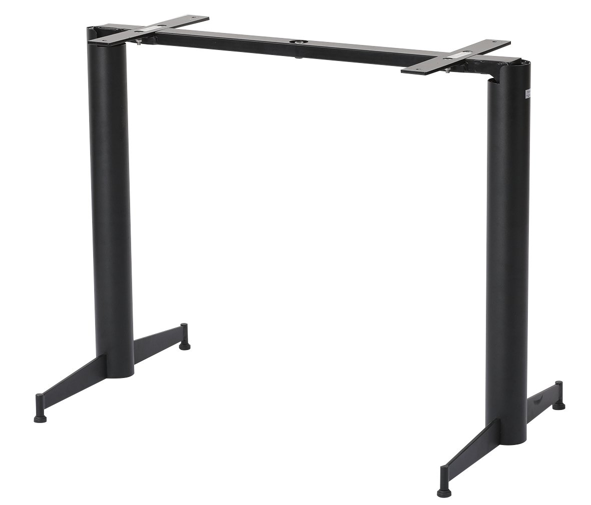

<div class="qv-media">
            <div class="qv-main">
            
        </div>
            </div>

<div class="qv-body">
            <p class="qv-cat">Steal</p>
    
    <h2 class="qv-name" id="qvTitle">
                    <span class="qv-brand">[NOROCK]</span>
                LG-NR4B    </h2>

            <p class="qv-type">Table Leg</p>
    
    <div class="qv-meta">
                    <p class="qv-price">
                ¥95,000<span class="qv-price-note">（税別）</span>            </p>
                            <p class="qv-stock">
                <span class="pcx-dot" style="background:#047857"></span>
                在庫品            </p>
            </div>

            <p class="qv-desc">設置する床面の凹凸による脚のぐらつきを自動的に調整し、ぐらつかない構造になっています。</p>
    
            <dl class="qv-spec">
                            <dt>サイズ</dt>
                <dd>W915 / D560 / H720</dd>
                            <dt>重量</dt>
                <dd>17.6kg</dd>
                            <dt>素材</dt>
                <dd>鉄亜鉛メッキ　沿岸部耐候仕様</dd>
                            <dt>カタログページ</dt>
                <dd>P.309</dd>
                    </dl>
    
    
    <div class="qv-actions">
        <a class="qv-more" href="product-323.html" data-no-quickview>
            詳細ページを見る <span aria-hidden="true">→</span>
        </a>
                    <a class="qv-brand-link" href="brand-norock.html" data-no-quickview>
                NOROCK の製品
            </a>
            </div>
</div>
